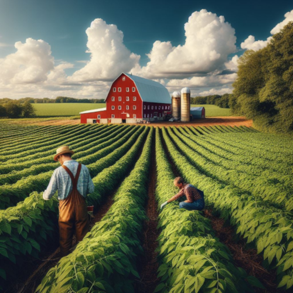

Bean.co Farming
- Planting and Growing:
- Soil Preparation: Beans prefer well-drained, loamy soil. Prepare the soil by tilling and adding organic matter.
- Seed Selection: Choose high-quality seeds suited to your region and climate.
- Planting Depth: Plant beans at a depth of 1–2 inches, ensuring adequate spacing between seeds.
- Care and Maintenance:
- Watering: Beans require consistent moisture. Water them evenly, especially during flowering and pod development.
- Weeding: Keep the bean field weed-free to prevent competition for nutrients.
- Support Structures: Some bean varieties (like pole beans) benefit from trellises or stakes for vertical growth.
- Harvesting:
- Timing: Harvest beans when the pods are plump and seeds are mature but not overly dry.
- Method: Gently pull or cut the pods from the plant. Avoid damaging the plant during harvest.
- Storage: Store dried beans in cool, dry conditions to prevent mold or insect infestations.
- Challenges:
- Pests and Diseases: Bean crops are susceptible to pests (aphids, whiteflies) and diseases (rust, bacterial blight).
- Weather Sensitivity: Beans may suffer from frost damage or excessive rain.
- Crop Rotation: Regular rotation helps prevent soil depletion and disease buildup.